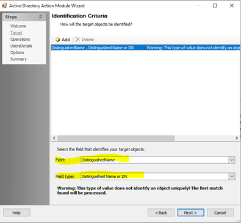

Summary:
Adding users to groups in multidomain forest does not work when user and group are in different domains.
Submitted by:
Justin Giemza
Cumulative List of fixes included since Service Pack:
None
Affected Versions:
10.0
Affected Module:
SA – AD Action Module
Dev Ticket:
SAT-8888
Escalation:
57492
Resolved in Version:
Actions\Stealthbits.StealthAUDIT.Actions.ActiveDirectory.dll v. 10.0.68.0
KB Type: Bug
Issue:
Adding users to groups in multidomain forest does not work when user and group are in different domains.
This only works with distinguished names.

Instructions:
- Unblock the hotfix zip file in the windows property dialog if an unblock button exists there.
- Close all instances of StealthAUDIT (check task manager under processes for all users)
- Exit StealthAUDIT console
- Copy and replace files from the folders in this hotfix to the corresponding folders in SA Install dir.
https://downloads.stealthbits.com/access/files/SAHotFixes/10.0/SA_10.0_073.zip